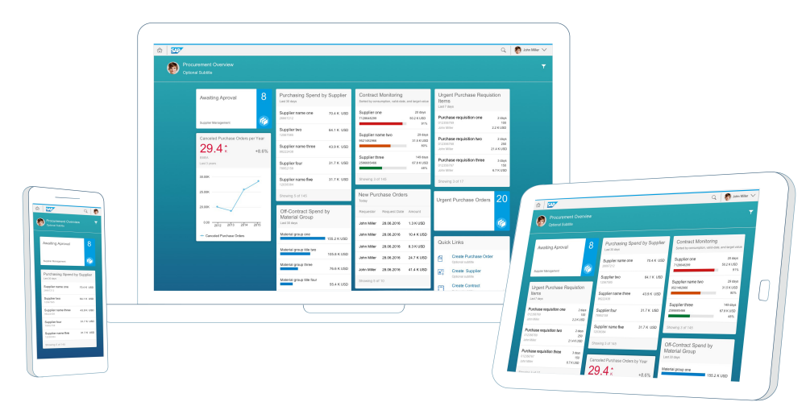

Overview pages provide quick access to vital business information at a glance, in the form of visual, actionable cards. Business users can focus on the most important tasks, enabling faster decision making as well as immediate action. Based on SAPUI5 technology, OData services and annotations, overview pages are a type of smart template, built and enhanced by developers.
Developers can build overview pages using a dedicated plugin in SAP Web IDE. End users then access overview pages from SAP Fiori launchpad, where each overview page is represented as a tile. End users can use a filter to narrow down the information displayed, or opt to hide cards when focusing on a particular topic. The displayed data is fully interactive, with clickable areas for easy navigation to relevant applications. Based on SAP Fiori, overview pages organize action items in an attractive and efficient way, with a fully responsive user interface.
Application header: provides a description of the area for which this application provides an overview (for example, procurement or sales). From the header area, users can perform actions such as hiding cards, and showing or hiding the filter bar.
Smart filter: provides application-level filters for changing the levels of data displayed in the cards. For example, you could use the filter to display only transactions larger than $10,000, only items lighter than 50kg, and so on. For more information about the Smart Filter Bar, see Smart Filter Bar.
Cards: a card is a smart component that uses UI annotation to render its content. Each card is bound to a single entity set in a data source. Different card types display different data in different ways: a card may display a donut or bar chart, or a table. Stack cards contain a set of quick view cards which can be viewed in an object stream. Cards are displayed on the overview page in up to five responsive columns and can be rearranged by dragging and dropping.

As a smart template application, the overview page is rendered according to information provided by the OData service metadata document, annotations files, and the configuration provided in the application manifest file. For more information about the Overview Page plugin, see SAP Fiori Overview Page Plugin for SAP Web IDE.
Overview pages utilize smart template features. For more information, see Developing Apps with Smart Templates.